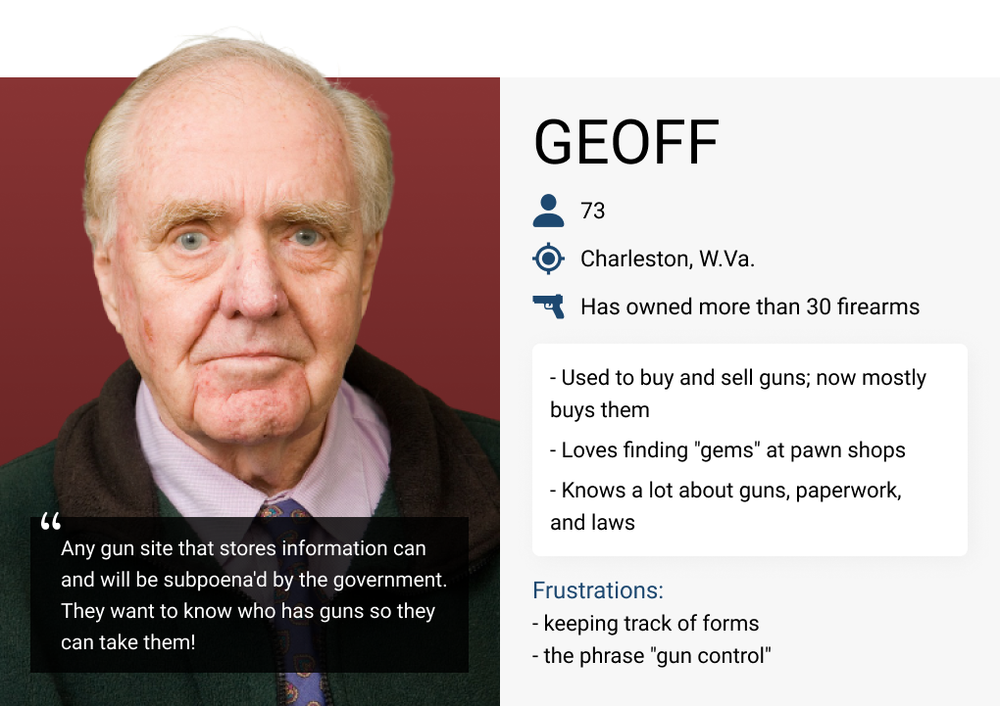

Trusted Arms Network
UI/UX Design for an early-stage startup in the firearms industry

-
Overview
Trusted Arms Network is an online marketplace and in-store identity validation ecosystem that aims to promote accountability in firearm sales while protecting users' personal data. It is a service under the parent company Ethical Identity, where I was a Summer 2020 UI/UX Design Intern.
-
Tools Figma, Adobe Photoshop, Mural.co
-
Timeline
April - August 2020
-
Team
4 designers, 8 developers, 3 project managers
The Problem
Few accountability measures exist to give buyers and sellers comfort and peace of mind that they are making safe transactions with people who are responsible and safety-conscious. We asked 16 gun owners for their concerns when purchasing and selling pre-owned firearms:
56% said the seller may have stolen the firearm or have questionable firearm history
75% said the buyer may generally handle firearms in an unsafe manner
Further, many gun owners expressed that the general process of buying a pre-owned firearm is not streamlined nor convenient, involving many documents and forms that can be lengthy, overwhelming and easy to misplace.
The Users
While Trusted Arms Network ultimately aims to involve actors from every stage in the firearm lifecycle, from manufacture to destruction, the user journeys I designed for primary involved firearm retail store employees, people who sell their firearms, and those who buy firearms (from retailers or from other individuals).
My Role within the Team
We were a fully remote team that used Agile Scrum methodology, sectioning work into 2-week sprints and sharing progress during daily 15-minute standup meetings. The 4-member design team aimed to stay two sprints ahead of the 8-person development team and work closely together.
My roles included research, persona creation, style guide ideation, mapping user journeys, designing email template and writing its HTML, creating wireframes and interactive mockups for an iPad kiosk and responsive web application. I also served as Scrum Master for two weeks.
Project Scope and Limitations
My internship focused on designing for the startup's minimum viable product. Trusted Arms Network is currently pre-funding and in its very early stages. The design team utilized our own networks to seek research participants and noted we may not have a representative sample. We also attempted share our surveys with firearm-related groups on sites like Reddit and Facebook with little success. As often as possible, I invited members of the development team who were also part of the target demographic (firearm owners and sellers) to test my designs. Naturally, they had more knowledge about the product than the average user would but still had valuable insight and helped me combat this limitation.
The Process
1. Secondary Research
I began the internship two weeks early to focus on research into firearms and their industry. This was crucial as there are dozens of laws and regulations regarding firearm sales and ownership, including many that vary state-by-state. My designs needed to be consistent with these laws.
As mentioned above, user research was limited. Thus, I did a wealth of secondary research to better understand firearm owners’ values and their opinions on accountability measures like a national registry. This helped me understand what words may be touchy or controversial in my UX writing. For instance, "registry," "database," "gun," "weapon," and "track" were not used in any of the copy.
Much of my observational research came from browsing online forums, blogs, and firearm communities as well as keyword searches on Twitter and Medium. Statistical research was drawn from think tanks like Pew Research Center and helped me design with empathy.

54% of firearm owners favor creating a federal database to track gun sales
67% of those who own firearms say protection is a major reason why
74% of gun owners say the right to bear arms is essential to their sense of freedom
2. Primary Research and User Personas
To further understand the needs and values of firearm owners, my team conducted primary research in the form of a survey (n=16). This, along with the secondary research mentioned above, shaped 10 user personas. Branden, Jade, and Geoff are three personas I created; abbreviated versions are below.
-survey respondent
BRANDEN, 22
Owner of two firearms
- Grew up in a gun-owning household
- Received first gun as gift from aunt/uncle while in high school
- Has never bought a gun, but is excited to buy from classmate
- Frustrations: uncertainty of current gun laws; paperwork
I'm a strong 2A advocate who knows guns do more good than bad, but the thought of buying a gun from someone I don't know concerns me.
JADE, 39
Will soon own first firearm
- Has a husband who travels for work and a daughter, 11
- Friend and coworker had home invasions in same week
- Carries pepper spray, but wants a gun for more protection
- Frustrations: Limited knowledge about guns, shooting, and laws
I hope to never need it, but I am ready to buy a gun now, just in case.
GEOFF, 73
Has owned more than 30 firearms

- Used to buy and sell guns; now mostly buys
- Loves finding "gems" at pawn shops
- Knows a lot about guns, paperwork, and laws
- Frustrations: keeping track of forms, the phrase "gun control"
Any gun site that stores information can and will be subpoena'd by the government. They want to know who has guns so they can take them!
3. Establishing Brand Identity
The first step in creating a style guide was finding overlap among the company's mission, industry research, and user values. This boiled down to trust, privacy, independence and forward-thinking.
Next, we distributed another survey (N=55) to firearm owners that contained research-backed color palettes and questions on what they evoked. These color combinations reflected themes like trust, nature, patriotism, and steel. Below are some responses to open-ended questions.
Women own guns too; don't leave out softer colors
I didn’t choose anything with red because red reminds me of blood
Keep it apolitical. Guns aren't really about identity for me, just like where I go to brunch
Very patriotic colors somewhat embody the idea of carrying firearms and the freedom that it holds.
Independently, my teammates and I analyzed the survey responses and regrouped to compare our findings and affinity diagrams. Colors that reflect the American flag were favored by roughly half the participants. However, it was important to consider the negative reactions and personas like Geoff above who may mistake a blue, red, and white site as a national, government-run registry. My proposed solution was to deepen the shades of red and blue and use red only as an accent to blue and grey. My goal was for the patriotism to be subtle enough that only those who would "want" to see it would recoginze it.
Have I mentioned that Trusted Arms Network is in its very early stages? For the first half of my internship, it did not even have a name! I contributed to a brainstorm of more than 50 potential product names, many of which reflected trust, privacy, independence and forward-thinking. "Trusted Arms" was the winner but lacked domain name availability. I felt that none of the proposed solutions were user-centric; for instance, trustedar.ms is virtually unpronounceable and trustedarms.us could make government-wary users think of .gov. Ultimately, the project was renamed "Trusted Arms Network" to emphasize shared values and camaraderie among the users.
4. Mapping User Flows
My goal as a designer was to ensure that although the process is complex, the journey feels simple and intuitive to the users. Thus, it was very important to map out user flows prior to jumping into Figma. Diagramming user journeys and actions was also helpful in identifying edge cases and potential user errors. Below is one of the simpler flows: a new user registering online
5. Wireframes, Redesigns and Rapid Prototyping
Once the style guide was established, my teammates and I separately designed a Trusted Arms Network's login page to generate as many ideas as possible for our look and feel. We discussed our mockups, their strengths and weaknesses, designed more iterations and decided that one of my mockups best represented our desired direction.
For the remaining flows, the designers worked individually on various user stories, seeking feedback from each other in daily design meetings. Because four designers were working on views of the same application, it was important to work collaboratively and build design systems with reusable components for cohesion.
Collaboration did not stop with the design team — it was also crucial to communicate with developers and understand their tools. The iPad kiosk is being built with React Native, and the wep app relies on the Bootstrap framework. I am very familiar with Bootstrap (I built this case study with it!), and understanding its utilities and grid system helped me design for development. When designing for the iPad, I often referred to React Native's documentation and Apple's Human Interface Guidelines.
Below are three of my designs; click the images to expand and see the process.
Web: User Login
iPad: In-store Registration
Web: Backend Redesign
Outcomes and Lessons Learned
Through this internship, I grew immensely as a designer. The team aspect resulted in a lot of valuable discussions and occasionally, compromises. The startup environment pushed me to design rapidly and sometimes came with pivots, scrapping of work, and quick deadlines. I got to wear many hats, including Scrum master
Although my internship has ended, I have offered ongoing support for future design work and modifications on anything I worked on as development continues. trustedarmsnetwork.com has the project's most up-to-date advancements and an option to subscribe for updates.